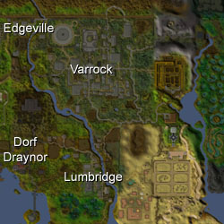
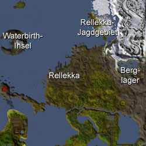
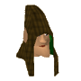
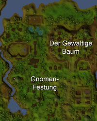
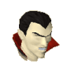
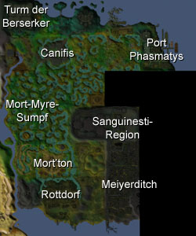
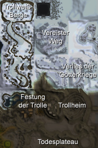
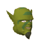
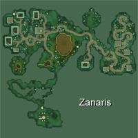
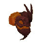

")
Die Völker von RuneScape
Einführung | Menschen | Zwerge | Gnomen | Vampire | Trolle | Goblins | Feen | Oger | TzHaar | Affen | Elfe
Einführung
Während der vielen tausend Jahre des Lebens auf RuneScape gab es eine Vielzahl von Völkern. Manche von ihnen wurden von ihren Feinden vernichtet oder nach dem Belieben der Götter während der Götterkriege im Dritten Zeitalter ausgerottet. Diese Abfolge von Kriegen und Konflikten hat dazu geführt, dass die Völker, die heute auf der Oberfläche von RuneScape leben - und diejenigen, die die Höhlen unterhalb der Oberfläche füllen - über die Jahrhunderte zäh und anpassungsfähig geworden sind, um ihre jeweilige Nische so gut auszufüllen, wie das kein anderes Volk kann.
Menschen


Misthalin

Misthalin ist ein Staat, der mehr oder weniger gleichmäßig in zwei Teile aufgeteilt ist. Die Bevölkerung außerhalb Varrocks lebt überwiegend von der Landwirtschaft und versorgt die Hauptstadt mit einem großen Teil der Lebensmittel, die diese benötigt, und verkauft ihre Produkte an andere, ärmere Staaten. Die Bewohner der Hauptstadt sind dagegen überwiegend Händler und Handwerker, die Rohstoffe zu brauchbaren Dingen verarbeiten. Diese Aufteilung der Gesellschaft mag sinnvoll erscheinen, die Probleme werden jedoch deutlich, wenn man den Südteil von Varrock betrachtet. Dort landen häufig die Bewohner der ländlichen Gebiete, die es in die Hauptstadt zieht. Sie sind meist ungelernt und naiv. Sie leben vom Abfall und kleiden sich in den Lumpen, die die Reichen nicht mehr haben wolllen.
Asgarnien

Die Weißen Ritter haben noch einen anderen Feind: die Schwarzen Ritter. Diese dunklen Krieger lieben Verwüstung und Tod und in den höllischen Tiefen ihrer Höhlen und den Festungsanlagen ihrer Burg stehen sie bereit, um in den Kampf gegen die Weißen Ritter zu ziehen.
Einem großen Teil der Bevölkerung Asgarniens sind diese Probleme allerdings gar nicht bewusst, da sie sich mehr um ihre eigenen Angelegenheiten kümmern. In Port Sarim betrifft dies alles vom Handel mit Schmuggelware bis zum Austausch von Seemannsgarn aus den langen Jahren, die die Bewohner auf See zugebracht haben. In Taverley, wo sich die Druiden treffen, um Guthix zu verehren, findet hauptsächlich Handel von Kräutern und Tränken statt. Die Zwerge, die unterhalb Asgarniens ein weitreichendes Tunnelnetz betreiben, sind in der Gesellschaft Asgarniens vollkommen akzeptiert - besonders wenn sie ihre Erze und ihre Erfindungen auf den Markt bringen.
Asgarnien ist zwar eine recht ruhiges Reich, das von den Nachbarn weitgehend ungestört ist, allerdings gibt es innerhalb seiner Grenzen zunehmend Gruppen von Unzufriedenen und Misanthropen, von Leuten, die dunkle Künste ausüben oder Zamorak verehren. Dies ist die wahre Bedrohung für Asgarnien: Die Mauern von Falador mögen stabil sein, aber dies mag daran liegen, dass die Gefahr aus dem Inneren kommt.
Kandarin

Zu der Fehde der beiden Könige von Kandarin kommt noch, dass das Land mit Außenposten und Siedlungen anderer Völker durchsiebt ist. Südlich von Ardougne befindet sich das Baumgnomendorf, ein eigenartiges Labyrinth, das entwickelt wurde, um die Gnomen vor einem Angriff zu schützen. Noch weiter im Süden, jenseits von Yanille, liegen die Oger-Stadt Gu'Tanoth und die Feldip-Hügel; Oger können sich allerdings unter Grenzen wenig vorstellen und kleine Stämme von ihnen findet man auch auf den Feldern in der Nähe von Yanille.
Trotz seiner ungünstigen Eigenheiten ist Kandarin ein reicher Staat und mindestens genauso mächtig wie Misthalin. Ardougnes Reichtum baut auf den verschiedenen Gewerben Yanilles, des Dorfs der Seher und Catherbys auf, sowie auf dem Handel mit den benachbarten Völkern um und innerhalb Kandarins. Gerüchten zufolge soll Kandarin sogar Verbindungen zu den mysteriösen Gebieten westlich der Berge haben, zu denen seit den Götterkriegen kein Mensch Zutritt hatte.
Die kharidianische Wüste

Die kharidianische Wüste besteht sogar aus zwei Reichen, was geschickt ist, da das nördlich des Shantay-Passes gelegene Land zivilisierter und wesentlich angenehmer für unvorbereitete Reisende ist. Die Stadt Al-Kharid wird von einem Emir regiert, der, seit sein einziger Sohn Ali entführt wurde, nicht mehr in der Öffentlichkeit gesehen wurde. Er überlässt jetzt einen großen Teil seiner Regierungsgeschäfte seinem Großwesir Hassan.
Das Gebiet südlich des Shantay-Passes ist eine sich ständig in Bewegung befindliche Fläche aus Sand, die mehr Ähnlichkeit mit den Strömungen und Bewegungen des Meeres hat, als mit irgendeinem anderen Landgebiet. Tausende haben hier die Orientierung verloren (und damit auch ihr Leben), aber der Sand bewegt sich weiter und die Knochen der toten Reisenden sind für Jahrhunderte begraben, bis sie vom Sand glattpoliert irgendwann wieder auftauchen, damit die Schakale etwas zu nagen haben.
Aber auch hier gibt es Zivilisationen, und die sind ausgesprochen alt. Die Zwillingsstädte Menaphos und Sophanem werden von Priestern regiert, die seit jeher dieselben alten Gottheiten verehren. In den Orten der westlichen Wüste herrscht weitaus weniger Ordnung. Die Bedabinen-Nomaden folgen keinem Gesetz außer dem eigenen, ebenso wie die Banditen. Die Bedabinen sind jedoch ein freundliches und gastliches Volk, während die Banditen einen großen Teil ihrer Zeit damit verbringen zu üben, wie man Hälse aufschlitzt.
Die Fremennik-Provinz

Obwohl sie für ihre Tapferkeit als Krieger bekannt sind, lehnen die Fremennik alle Arten von Magie ab. Seit langem befinden sie sich im Kampf mit ihren entfernten Verwandten auf der Mondinsel.
Die Fremennik haben im Gegensatz zu allen anderen menschlichen Völkern ihr Land vollständig unter ihrer Kontrolle, kein anderes zivilisertes Volk lebt innerhalb ihrer Grenzen.
Miscellania und Etceteria

Karamja

Vieles deutet darauf hin, dass Karamja eine dunkle Geschichte hat. Die Eingeborenen erzählen von den Broodoo-Opfern, deren ruhelosen Todesschlaf man eher in Morytania erwarten würde. Es gibt Höhlen und Gräber tief unter der Erde und gewaltige Bestien, die alle paar Jahre erscheinen und die menschliche Bevölkerung in Angst und Schrecken versetzen. So ist Karamja zwar ein Land voll von unberührtem Reichtum, aber es ist nicht einfach, sich diesen zu Nutze zu machen.
Karamja ist auch die Heimat eines der sonderbarsten Völker RuneScapes, denn unter dem Vulkan befindet sich die TzHaar-Stadt, in der es ein bizarres Leben aus Stein und Feuer gibt.
Entrana

Zwerge


Keldagrim

Durch ein weitläufiges Lorennetzwerk ist Keldagrim mit dem Rest des Zwergenvolks verbunden. Mit Loren kann man unterirdisch am schnellsten und effektivsten reisen.
Die Stadt ist in zwei Teile aufgeteilt: die wohlhabende Elite wohnt am westlichen Ufer, während die armen Arbeiter, die für die großen Gesellschaften der Vereinigten Bergbauindustrie arbeiten, am östlichen Ufer leben. Dort befinden sich, wie man sich vielleicht denken kann, die riesigen Hochöfen und andere laute und die Luft verpestende Anlagen, sowie eine Vielzahl zwielichtiger Gestalten und Bars.
Gnomen

Die Gnomen sind ein sonderbares Volk, das sich allerdings, wenn man ehrlich ist, nicht so sehr von den Menschen unterscheidet. Man darf jedoch nicht vergessen, dass die meisten Gnomen in RuneScape mit Bögen bewaffnet sind und wissen, wie man damit umgeht. Derjenige, der die Gnomen angreift, ist daher ein wagemutiger Gegner - eine Lektion, die General Khazard noch lernen muss. Die Gnomen verfügen, ähnlich wie die Zwerge, über einen ausgesprochenen Erfindungsreichtum, allerdings wirkt sich dieser bei den Gnomen weniger im praktischen, als im kulinarischen Bereich aus. 
Die Gnomen-Festung

Wenn sie zu Hause in ihrer Festung sind, sind die Gnomen leidenschaftliche Sportler und man findet sie oft dabei, wie sie ihren Nationalsport Gnomball spielen oder sich ein spannendes Match anschauen. Außerdem vergnügen sie sich gerne in Bars und Restaurants, allerdings ist ihr spezieller Geschmack für menschliche Reisende manchmal etwas gewöhnungsbedürftig.
Vampire
 Man kann nicht viel über die Vampire sagen, das nicht entweder ein reiner Mythos oder ein erwiesener Schrecken ist. Die Theorie, dass diese dunklen Herrscher Morytanias einst Menschen waren, ist höchst zweifelhaft, da sie derart voller Hass und Bosheit sind, dass sie nicht wirklich mehr mit Menschen gemein haben als mit Einhörnern. Die Vampire regieren Morytania mit eiserner Faust und jeder Sterbliche, der das Land betritt, muss einen Blutzoll entrichten.
Morytania

Canifis unterscheidet sich auf den ersten Blick nicht wesentlich von den Städten auf der anderen Seite der Grenze nach Misthalin. Wenn allerdings der Vollmond aufgegangen ist, können Reisende erkennen, dass die gesamte Bevölkerung des Ortes aus Werwölfen besteht. Das ist der Grund, warum die Leute aus Canifis - anders als der Rest der Menschen in Morytania - es schätzen, von Vampiren regiert zu werden.
Port Phasmatys ist eine Stadt mit einem tragischen Schicksal, verflucht durch eigene Entscheidung. Als Lord Drakan zu den Bewohnern kam und einen Blutzoll verlangte, wandten sich diese an einen Fremden, Necrovarus, und schlossen mit ihm einen dunklen Pakt, durch den sie zu einem ewigen Leben verflucht sind.
Die Krieger, die in den Grabhügeln begraben sind, waren einst große Helden der westlich gelegenen menschlichen Staaten. Heute liegen sie jedoch unter der von der Bosheit der Sanguinesti-Region durchtränkten Erde und erstehen als verbitterte Schatten wieder auf, um ihre Gräber vor Dieben und Abenteurern zu verteidigen.
Trolle
![[Bild]](../../img/main/kbase/npc/chathead/troll.gif) Von den Völkern RuneScapes verfügen nur wenige über so wenig Intelligenz wie die Trolle. Ihnen fehlt es vollkommen an rationalem Verstand, aber das hält sie, zur großen Verblüffung der Gelehrten in Falador und Burthorpe, die das Verhalten der Trolle seit Jahrzehnten untersuchen, nicht davon ab, immer weiter vorzudringen. Was man wohl sagen kann, ist, dass die Trolle keinen Verstand brauchen, weil sie einfach massig und zäh genug sind. Solange sie nicht wissen, dass sie ein Problem haben, müssen sie es schließlich auch nicht lösen, nicht wahr?
Von den Völkern RuneScapes verfügen nur wenige über so wenig Intelligenz wie die Trolle. Ihnen fehlt es vollkommen an rationalem Verstand, aber das hält sie, zur großen Verblüffung der Gelehrten in Falador und Burthorpe, die das Verhalten der Trolle seit Jahrzehnten untersuchen, nicht davon ab, immer weiter vorzudringen. Was man wohl sagen kann, ist, dass die Trolle keinen Verstand brauchen, weil sie einfach massig und zäh genug sind. Solange sie nicht wissen, dass sie ein Problem haben, müssen sie es schließlich auch nicht lösen, nicht wahr?
Das Land der Trolle

In der Gesellschaft der Trolle geht es nicht viel anders zu als in den Schulen der Menschen. Je größer und überlegener ein Troll ist, um so mehr Macht übt er aus - man kann sagen, dass die Trolle ein Volk von kleinen Tyrannen sind. Natürlich sind nicht alle Trolle so, es gibt ein paar, die deutlich intelligenter sind als der Rest.
Trolle heißen meistens danach, was sie als erstes gegessen haben (oder, wenn sie nicht wissen, wie dieses erste Essen heißt, nach dem Geräusch, das dieses macht). Diese Namensgebung kann zu recht komischen Ergebnissen führen, aber Trolle sind nicht unbedingt für ihren Humor bekannt, also lacht lieber nicht zu laut.
Goblins
 Die Menschen auf RuneScape haben vor allem mit den Goblins zu tun, die sich auf der Oberfläche der Welt aufhalten. Es gibt nur wenige Orte, an denen man keine Goblins finden kann, aber es gibt genauso wenig Goblins, die man nicht als dumm bezeichnen kann. Der Dorgeshuun-Stamm der Goblins stellt die bemerkenswerte Ausnahme davon dar. Sie hatten seit der Zeit der Götterkriege zu den anderen Goblins keinen Kontakt. Seit damals verstecken sie sich in ihrer unterirdischen Stadt, Dorgesh-Kaan.
![[Bild]](../../img/main/kbase/npc/chathead/goblin_2.gif) Wären sie nicht so auffallend dumm, könnten die gewöhnlichen Goblins, die an der Oberfläche leben, erhebliche Probleme für die menschlichen Zivilisationen verursachen. Die Dorgeshuun, die in keinster Weise vergleichbar dumm wie die normalen Goblins sind, lehnen jede Form von Gewalt ab. Sie trauen den Menschen nicht und nur sehr wenige Menschen haben ihre Minen gesehen oder auch nur ein halbwegs normales Gespräch mit einem von ihnen geführt.
Wären sie nicht so auffallend dumm, könnten die gewöhnlichen Goblins, die an der Oberfläche leben, erhebliche Probleme für die menschlichen Zivilisationen verursachen. Die Dorgeshuun, die in keinster Weise vergleichbar dumm wie die normalen Goblins sind, lehnen jede Form von Gewalt ab. Sie trauen den Menschen nicht und nur sehr wenige Menschen haben ihre Minen gesehen oder auch nur ein halbwegs normales Gespräch mit einem von ihnen geführt.
Feen
![[Bild]](../../img/main/kbase/npc/chathead/fairy1.gif) Obwohl fast die gesamte Bevölkerung RuneScapes sich ihrer Existenz nicht bewusst ist, sind es die Feen, die dafür sorgen, dass die Jahreszeiten auf RuneScape wie gewohnt kommen und gehen. Ohne die Feen gäbe es Missernten und der graue Winterhimmel würde ein paar Wochen länger bleiben. Auch wenn die meisten Leute klipp und klar abstreiten, dass Feen überhaupt existieren, sind sie ohne Zweifel ein für RuneScape sehr wichtiges Volk.
Obwohl fast die gesamte Bevölkerung RuneScapes sich ihrer Existenz nicht bewusst ist, sind es die Feen, die dafür sorgen, dass die Jahreszeiten auf RuneScape wie gewohnt kommen und gehen. Ohne die Feen gäbe es Missernten und der graue Winterhimmel würde ein paar Wochen länger bleiben. Auch wenn die meisten Leute klipp und klar abstreiten, dass Feen überhaupt existieren, sind sie ohne Zweifel ein für RuneScape sehr wichtiges Volk.
Zanaris

Die Feen von Zanaris leben in kleinen Häuschen hoch über der Erde. Erstaunlicherweise erledigen sie allerdings den Handel auf der Oberfläche. Ob sie das machen, weil sie Reisende aus anderen Welten erwarten oder ob sie einfach Privates und Geschäftliches getrennt halten wollen, darüber kann man nur spekulieren. Sicher ist allerdings, dass kein menschliches Wesen je in der Lage sein wird, wirklich zu verstehen, was im Kopf einer Fee vor sich geht.
Da es sich um einen Schnittpunkt verschiedener Welten handelt, bietet der Markt von Zanaris einige Gegenstände, die in der 'realen Welt' von RuneScape Neid hervorrufen werden. Natürlich hat diese Lage zwischen den Welten ihren Preis und Zanaris ist ständig durch diese anderen Welten bedroht.
Oger
![[Bild]](../../img/main/kbase/npc/chathead/skrach_uglogwee1.gif) Oger sind, ähnlich wie Trolle, eher für ihre körperliche Stärke als für ihre Intelligenz bekannt. Sie sind in etwa so dumm wie die Trolle, aber sie sind wesentlich einfallsreicher. Die Oger der Feldip-Hügel leben in Stämmen, die von Häuptlingen angeführt werden, über denen noch die Schamanen stehen, die in der Enklave in Gu'Tanoth leben.
Oger sind, ähnlich wie Trolle, eher für ihre körperliche Stärke als für ihre Intelligenz bekannt. Sie sind in etwa so dumm wie die Trolle, aber sie sind wesentlich einfallsreicher. Die Oger der Feldip-Hügel leben in Stämmen, die von Häuptlingen angeführt werden, über denen noch die Schamanen stehen, die in der Enklave in Gu'Tanoth leben.
Die Feldip-Hügel

Aus uns unbekannten Gründen (da sich die wenigsten Gelehrten damit beschäftigen möchten), leben die Oger nach Geschlechtern getrennt. Die Männer leben in Gu'Tanoth und die Frauen ausschließlich in Oo'glog. Man vermutet, dass die Ogerfrauen die Ogermänner dermaßen einschüchtern, dass die Männer die Abgeschiedenheit der mit Drachen gefüllten Höhlen von Gu'Tanoth bevorzugen.
Die TzHaar
 Das Volk, das unter dem Vulkan von Karamja lebt, ist erstaunlich freundlich und, obwohl sie eine große Auswahl der besten Waffen haben, scheinen sie an militärischer Macht und Eroberungen vollkommen uninteressiert zu sein. Einige Gelehrte haben jedoch Zweifel an der Friedlichkeit der TzHaar und eine Reihe von Verlagen druckt Pamphlete, die vor den Gefahren unter Karamja warnen.
TzHaar

Die TzHaar benutzen eine Währung namens TokKul. Diese Obsidian-Scherben haben in der Welt außerhalb wenig Wert, aber für die TzHaar - die kein Interesse an Gold haben - ist es die einzig wertvolle Währung.
Affen
![[Bild]](../../img/main/kbase/npc/chathead/awowogei.gif) Die meisten Affen, denen Reisende auf RuneScape begegnen, sind klein und unbedeutend und sie verfügen über nichts, was einer Gesellschaft nahe kommt. Dies gilt jedoch nicht für die Affen des Affenatolls. Sie haben eine genau geordnete und auf ihrer Insel abgeschottete Gesellschaft entwickelt, mitsamt einer Armee, auf die jedes Volk stolz wäre. Einige der regierenden Affen sind jedoch gierig und neigen dazu, ihr Volk in schmutzige Kriege zu führen, die niemandem nutzen.
Die meisten Affen, denen Reisende auf RuneScape begegnen, sind klein und unbedeutend und sie verfügen über nichts, was einer Gesellschaft nahe kommt. Dies gilt jedoch nicht für die Affen des Affenatolls. Sie haben eine genau geordnete und auf ihrer Insel abgeschottete Gesellschaft entwickelt, mitsamt einer Armee, auf die jedes Volk stolz wäre. Einige der regierenden Affen sind jedoch gierig und neigen dazu, ihr Volk in schmutzige Kriege zu führen, die niemandem nutzen.
Affenatoll

Elfen
Die Elfen gehören zu den ältesten Völkern auf RuneScape. Sie haben die Götterkriege kommen und gehen sehen und beobachtet, wie andere Völker verschwunden sind. Weil sie sich aber vor so langer Zeit hinter die Berge zurückgezogen haben, gibt es nur wenige Wissenschaftler, die etwas über die Elfen wissen und noch weniger, deren Wissen auch wirklich richtig ist. Die Elfen verehren eine seltsame Gottheit namens Seren, die mit den Kristallsamen kommuniziert, die die Elfen zur Herstellung von fast allem verwenden. Ihre Gesellschaft spaltete sich jedoch vor vielen Jahrhunderten auf und daher kommt es im Wald von Isafdar häufig zu Scharmützeln, denn die Rebellen-Elfen kämpfen für die Rückeroberung ihres verlorenen Gebietes.
Tirannwn

Die wichtigste Ansiedlung der Elfen ist Prifddinas, eine mächtige Stadt, die vor Tausenden von Jahren aus Kristallsamen gewachsen ist. Obwohl noch nie ein Mensch ihre Mauern überwunden hat, gibt es Gerüchte über die Schönheit und die geniale Architektur der Stadt - Gerüchte, die sich in jedem Werk über die Elfenkultur finden, das den Weg nach Varrock überlebt hat.
Die Rebellen-Elfen halten sich immer wieder woanders auf, ihre derzeitige Behausung Lletya ist aber schon seit einer ganzen Weile ihr verlässlicher Stützpunkt. Es ist den Menschen nicht bekannt, wie der Bürgerkrieg begann, aber die Gelehrten sind sich einig, dass er für ein einst mächtiges Volk das Ende bedeuten könnte.

Weitere Artikel in Diverse Anleitungen
|
|
|
Weiterführende Informationen Wenn euch dieser Artikel nicht weitergeholfen hat, könnt ihr in den folgenden Kapiteln der RuneScape-Webseite mehr Informationen finden:
|
|